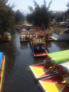
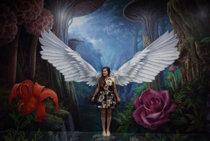

What's New?
A Day Trip to Xochimilco

Posted: 02/25/18
You've come to Mexico City for new experiences right? I can't think of a better place to see, hear, and eat new things.
There is an island of weird hanging dolls to float by, mariachi bands will jump aboard to sing to you, snacks... drinks..., and... well hey maybe my photos
will be better at selling the idea to you than I am. You must be reading this because you're interested. Go with your gut and make the trip.
Read more!!
My Trip to Mexico City
Posted: 02/25/18
I feel like Mexico City is an under-rated travel destination. It was by far one of favorite travel trips. I was there for five days...
I saw a Lucha Libre wresting match, pyramids, went on a boat tour, to an artic bar, drank mezcal with a worm
in it... (ek!) And the food... ugh, the food... from my chips with chile and lime to all the chilaquiles...
... you will be missed.
Read More!!
My Coding Journey

Posted: 02/20/18
When I think about the web… when it was invented… I begin to feel like a dinosaur, pilgrim, or pioneer of some sorts. Thank you, Sir Tim Berners-Lee, when you proposed this crazy “web” concept in 1989. Wait… 1989?? Yep. That’s when I start feeling like a dinosaur. I can’t wait to tell my hypothetical grandchildren that I grew up during the era of the internet, that “back in my day that there ‘world-wide web’ was invented.” It feels so common nature to search things on the web and I really can’t imagine my life without it. Is that sad? Meh. Send me a therapy email at a later time… for now let’s get to the point of this post. *My Coding Journey* Oo0o0o0o0
And to be quite frank with you, I’m pretty sure I am using the words coder/coding a little out of content, since I’m strictly referring to learning super basic web design/development, but for the sake of matching “Cs” (Christie—Coffee, Cats, and Coding), let’s roll with it.
Read More!!